It was a dream...
. "EULOGIA'INN" hotel in Ahmedabad, exterior and interior lighting design. Architecture and Interiors by "Des' design" Architects. Photometric results of the lighting concept.
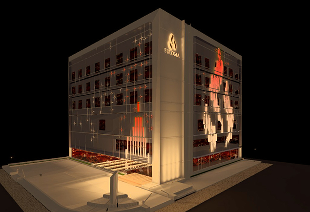
. "DEV Aurum" commercial complex in Ahmedabad gets a playful facade by night. The copper elliptical fins become a media screen with game content to interact with visitors. Architecture by "Placekinesis" Architects.
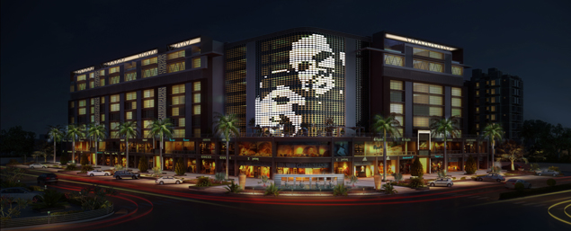
. "Gheekanta Cloth market" facade projects in light the day's flux of people inside. Architecture by "APPL - Architects".
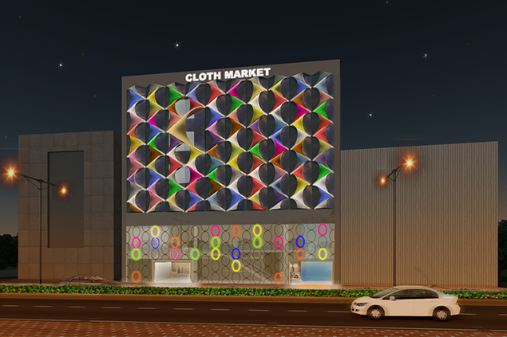
. "Kotak" private residence Garden gets a visual hierarchy and light themes by night - 16500m2 Garden lighting, "A.Teli" landscape design.
Below, the meditative backside's mood.
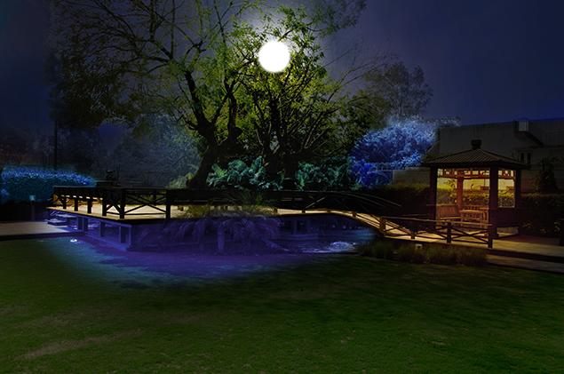
. "ISCON CLUB" luxury Multiclub Complex in Bhavnagar (facade illumination + interiors + exteriors), project with Placekinesis Architects.
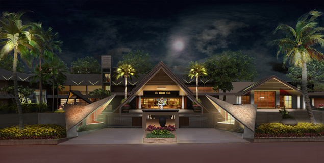
. "ISCON Platinum"luxury residential complex in Ahmedabad (facade illumination + + interiors + exteriors),Architecture by "Placekinesis" Architects and Aakirn Interior Architects.
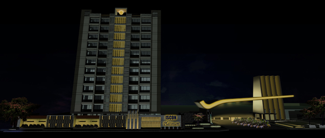
. "Wind Park" Luxury residential complex, building illumination concept for Balaji Developers, Architecture by "SamArch Design Studio".
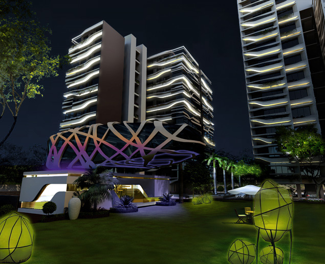
. "Wind Park" Luxury residential complex, lighting master plan proposal.
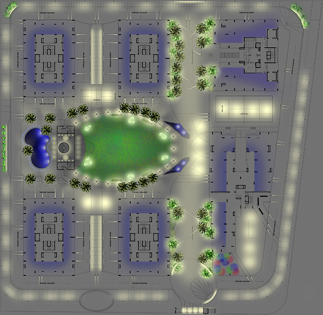
. "PBP" business park, building and landscape lighting proposal in Ahmedabad, "Parshwanat developers, Architecture by "Apical reform" Architects.
"Pixioles" will fly by night on top of the metaphorical landscape of a commercial building and will create colorful yet mysterious dances all along the scheduled lighting hours. To see their subtil rituals, Click already on the left side image below to see the preliminary media programming.
early night- scene 1....................................................... late night: scene N......................................................
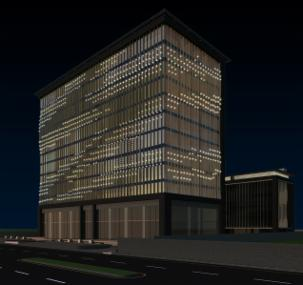 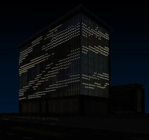
With Public Institutions
. An everyday place of commutation, Metro Express- Linkway Ahmedabad Gandhinagar. Architecture by "Hiren Gandhi Architects" - 15 Stations 4 typologies on 76 km - indoors + Outdoors.
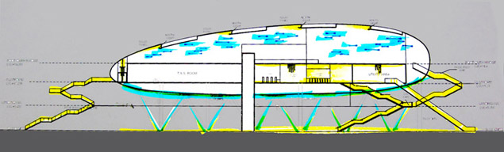
With Corporate Clients:
. Making of Commerce Street, "Orchid" Business Center: "know more about orchids!". Architecture by "ADS Architects" agency:
This lighting concept takes inspiration from the 26000 varieties of orchids existing in the world. Through dynamic lighting installation:media lines & screens on the building's central shafts, plus synchronized projectors coloring the trees' foliage, Atelierdada will display in figurative and abstract way all varieties of orchids worldwide! Every day of the week will have an orchid color collected from all over the world: Sunday red varieties, Monday white varieties, etc... If you want to "know more about orchids", then come to Orchid center and experience the night time promenade!..............
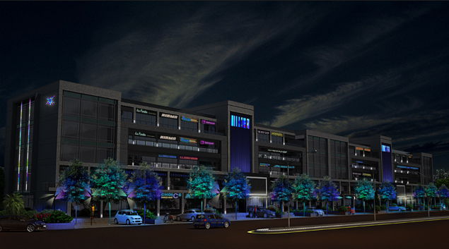
. A moody market place, "Sumel 3" Business Park - Lighting intervention on already constructed park:
Existing situation:
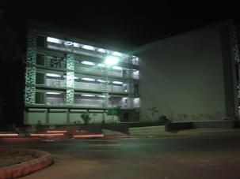
Atelier dada project:
Photon-silkworms hibernate in their jalli cocoons while some others take birth and become photon-moths! May it be @ sunrise for block A, @noon for bloc B, @ sunset for bloc C, or @ the blue hour for bloc D as we can see in the picture below, silk-photons will add poetry to the visual environment of Sumel 3 park.
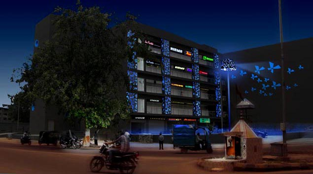
. PPP Competition for "Maurepas" city Master plan in France with "ETDE"/Boyugues construction. See "other works" section for more details about this project.
. "Dar Ettaq", experimental villa in Lac palace-Tunis. Architecture by "Qartboun" Architects.
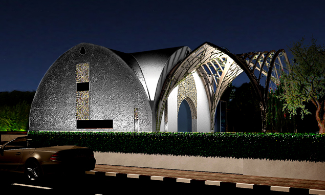
. Hindu temple in Mehsana - India.
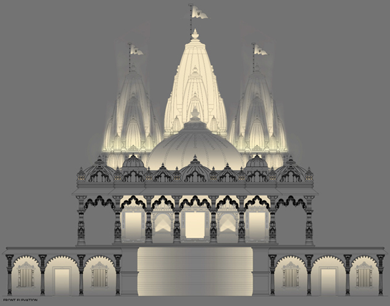